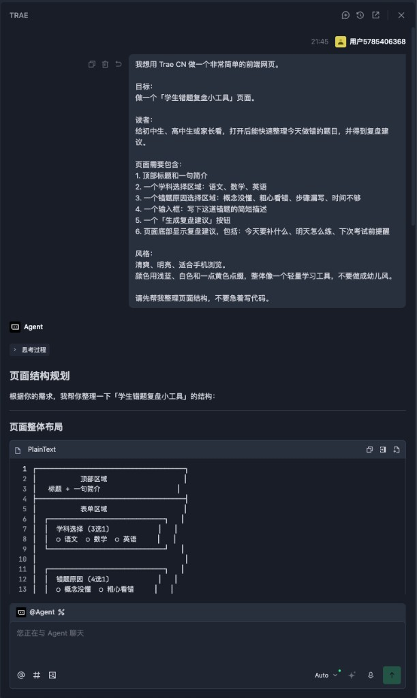

Trae CN 目前免费：普通人 10 分钟做出网页
零成本 · 跟着做就能出页面
关注 AI技趣星球，一起用技术创造乐趣。
前面几篇，我们已经聊过 AI 能做什么，也把 大模型、提示词、Agent 这些名词 翻成了人话。
但很多朋友看到这里，还是会卡在一个问题：
「我知道 Agent 是会自己干活的 AI 了，可我到底该打开哪个软件试？」
今天就从一个免费、中文友好、适合新手体验的工具开始：Trae CN。
一句话结论：Trae CN 可以理解成一个带 AI 助手的编程软件。目前国内个人版可以免费用，海外版已经有付费订阅。对普通人来说，它是接触 Agent IDE 最省事的第一站。
上手难度：⭐⭐ 需要安装一个软件，跟着提示词试一次，大概 10 到 20 分钟能跑完。
先说清楚：
价格和权益可能会变。本文写作时，Trae CN 个人版显示免费，企业版收费；海外版已有 Pro 等付费订阅。你实际使用前，以官网页面为准。
下面文章里的几张图，都是按本文 Prompt 实际操作出来的截图。
你可以先快速扫一眼：先看 Trae 怎么理解需求，再看第一次生成的页面，最后看继续美化后的效果。
先说人话：Trae CN 像一个会写代码的装修队
如果你想做一个小网页，传统流程大概是这样：
学 HTML
→ 学 CSS
→ 学 JavaScript
→ 装开发工具
→ 自己写代码
→ 出错了自己查这对普通人不太友好。
Trae CN 的感觉更像是：
你说清楚想要什么
→ AI 帮你拆任务
→ AI 写代码
→ AI 修改文件
→ 你看效果
→ 不满意继续提要求你可以把它想成一个会写代码的装修队。
你不需要自己会砌墙、铺地板、接电线。
但你要说清楚：房间做什么用、想要什么风格、哪些东西必须有。
做网页也是一样。
你不是在背代码。
你是在练习把需求说清楚。
Trae CN 是什么？和普通聊天 AI 有什么区别
Trae CN 是一个 AI 编程工具，也可以叫 AI IDE。
IDE 这个词不用怕。
你可以先理解成「写代码用的软件」。
普通聊天 AI 像微信里的朋友。
你问它一句，它回你一段。
但 Trae CN 更进一步。
它可以直接看到你的项目文件，帮你创建文件、改代码、解释报错。
所以它更接近我们前面说的 Agent：
你给目标，它自己分几步去完成。
当然，别把它想成万能按钮。
现在最适合新手用它做的，是小网页、小工具、学习项目、代码练习。
真正复杂的商业系统，还是需要懂产品、测试和发布。
为什么值得试 Trae CN？
Trae CN 背后是字节跳动——就是抖音、剪映、飞书那家公司。
它一向擅长做「普通人也能打开就用」的产品。
Trae CN 可以理解为同一条路：把偏专业的写代码，变成你和 AI 助手一起协作。
对我们这个系列来说，重点就一件事：今天能不能打开软件，做出一点看得见的东西。
更现实一点说，它适合当你的第一把钥匙。
因为后面还有更进阶的工具。
比如 Claude Code、一些命令行 Agent、MCP 工具链。
这些工具很强，但新手第一次用会遇到很多前置步骤：
安装 Node.js
→ 配终端环境
→ 配命令行工具
→ 配账号和 Key
→ 处理报错如果你一上来就卡在这些地方，很容易还没体验到 AI 的威力，就先被安装过程劝退。
Trae CN 的好处是：先把 Agent IDE 装起来。
等你以后想用 Claude Code 这类进阶工具，也可以让 Trae 帮你一步步检查环境、解释报错、生成安装命令。
所以我的建议很简单：
先装一个 Trae CN，先做出一个小东西。
不要一开始就把自己扔进复杂工具链里。
可以先这样理解这条路线：
所以本文不是说 Trae CN 是唯一选择。
而是说：如果你刚开始接触 Agent IDE，它目前是最适合先上手的一种方式。
第一步：安装和打开 Trae CN
打开官网下载：https://www.trae.cn/
更详细的安装说明可以看官方文档：快速入门
安装过程和普通软件差不多。
大致就是：
打开官网
→ 下载 Trae CN
→ 安装
→ 用手机号登录账号
→ 新建或打开一个文件夹建议你第一次不要打开一堆旧项目。
新建一个空文件夹就行。
比如叫：
my-first-trae-page这样 AI 改什么文件，你一眼就能看明白。
新手规则：第一次只做一个小页面，不要一上来做 App、商城、后台系统。
第二步：先用对话区讲清楚需求
打开 Trae CN 后，你会看到 AI 对话区域（有的版本入口叫「对话」或 Chat，都是同一个意思）。
你可以先不要急着让它写代码。
先让它帮你确认需求。
你可以复制这段：
我想用 Trae CN 做一个非常简单的前端网页。
目标：
做一个「学生错题复盘小工具」页面。
读者：
给初中生、高中生或家长看，打开后能快速整理今天做错的题目，并得到复盘建议。
页面需要包含：
1. 顶部标题和一句简介
2. 一个学科选择区域：语文、数学、英语
3. 一个错题原因选择区域：概念没懂、粗心看错、步骤漏写、时间不够
4. 一个输入框：写下这道错题的简短描述
5. 一个「生成复盘建议」按钮
6. 页面底部显示复盘建议，包括：今天要补什么、明天怎么练、下次考试前提醒
风格：
清爽、明亮、适合手机浏览。
颜色用浅蓝、白色和一点黄色点缀，整体像一个轻量学习工具，不要做成幼儿风。
请先帮我整理页面结构，不要急着写代码。这一步很重要。
因为很多人用 AI 写代码，一上来就说：
帮我做个网页。这太模糊。
AI 不知道你要做给谁看，也不知道页面上该有什么。
先让它整理结构，相当于先画草图。
我按上面那段 Prompt 发出去后，Trae CN 会先给出页面结构规划（还不会立刻写代码）。
这是第一张真实操作截图：

你能看到：它没有直接莽着写代码，而是先把需求拆成「顶部 / 表单 / 按钮 / 结果区」，还附带了一个线框图。
确认结构没问题，再进入下一步写代码。
第三步：再让 Trae CN 生成页面
等它把结构说清楚后，你再发第二段：
现在请根据上面的结构，帮我生成一个可直接打开的前端页面。
要求：
1. 使用 HTML、CSS、JavaScript 写在同一个 index.html 文件里
2. 页面适配手机和电脑
3. 学科和错题原因可以点击选择，并有选中状态
4. 点击「生成复盘建议」按钮后，在页面底部根据选择内容显示建议
5. 代码要尽量简单，适合新手看懂
请直接创建或修改项目里的 index.html 文件。这段提示词里有几个关键点：
生成完成后，你可以在文件列表里找到 index.html。
如果 Trae CN 提供预览或运行按钮，就直接点。
如果没有，也可以在电脑上用浏览器打开这个 HTML 文件。
不同版本的 Trae CN，界面上的入口名字可能略有差别（比如叫「对话」「Chat」「智能体」）。不用纠结名字，流程一样：先聊清楚结构，再让它写
index.html。
第一次生成：能用了，但还可以更好看
按第二段 Prompt 生成并打开 index.html 后，第一次效果通常是这样。
功能已经齐全，但样式还比较朴素：
页面上已经有：
- 顶部标题和简介
- 学科选择（语文、数学、英语）
- 错题原因选择
- 错题描述输入框
- 点击「生成复盘建议」后的底部建议
到这一步，说明 Agent 流程已经跑通：你说需求，它改文件，浏览器能打开。
别急着追求完美。先确认能点、能出结果，再像改稿一样慢慢美化。
不满意怎么办？继续像改稿一样改
第一次生成的页面，不一定完美。
这很正常。
你不要急着重开。
直接让 Trae CN 修改。
比如：
请继续修改这个页面：
1. 顶部标题太普通，请改得更像一个学习效率工具
2. 学科按钮和错题原因按钮之间的间距再大一点
3. 按钮颜色改成更明显的蓝色
4. 手机屏幕下按钮自动换行，不要挤在一行
5. 页面底部增加一句「复盘建议仅供学习参考，真正掌握还需要自己重新做一遍」
只修改现有 index.html，不要新建其他文件。还想再好看一点？可以再发一段，专门要「视觉效果」：
请继续美化这个页面，让整体更美观、更像学习工具：
1. 学科和错题原因选项增加图标或 emoji，选中状态更明显
2. 按钮和卡片用清爽渐变，层次更清楚
3. 生成复盘建议按钮更醒目
4. 保持适合手机浏览，不要加复杂动画
5. 页面底部保留「复盘建议仅供学习参考」的提醒
只修改现有 index.html，不要新建其他文件。我按上面两段改稿 Prompt 迭代后，页面会变成这样。
你会发现：图标、渐变、选中态都更清晰，已经有点像一个轻量学习工具了。
你看，这就像让同事改稿。
第一次先出初稿（能用的页面）。
第二次改布局、间距、颜色。
第三次专门要「更好看」。
AI 写代码并不神秘。
它只是把「改稿」这件事，扩展到了网页和软件里。
一句话：你说一段需求，真的能变成一个能打开的页面；不满意就继续说一句。
新手最容易踩的 4 个坑
第一，目标太大。
不要一上来做「小红书同款 App」「完整电商网站」「自动赚钱系统」。
先做一页网页。
第二，需求太虚。
「高级一点」「好看一点」「像大厂一样」都不够清楚。
你最好说：颜色、内容、按钮、布局、适合手机还是电脑。
第三，不看效果就继续加功能。
每生成一次，先打开看。
看完再改。
第四，把 AI 当成不会出错的专家。
AI 可能写出看似能用、实际有问题的代码。
所以新手练习项目没问题。
涉及钱、账号、隐私数据，就要格外谨慎。
错题复盘这种页面如果以后要「保存记录」，也别一上来就让 AI 接真实学生姓名、学校等隐私信息。
一个更稳的 Prompt 模板
以后你想让 Trae CN 做小页面，可以套这个模板：
我想做一个【页面主题】。
目标读者：
【谁会打开这个页面】
页面目的：
【打开后希望他做什么】
页面内容：
1. 【模块一】
2. 【模块二】
3. 【模块三】
交互：
【有没有按钮、筛选、输入框、点击效果】
风格：
【清爽 / 专业 / 可爱 / 科技感 / 适合手机】
技术要求：
请用 HTML、CSS、JavaScript 写成一个 index.html。
代码尽量简单，适合新手看懂。
请直接创建或修改当前项目文件。你不需要把技术词背得很熟。
先把方括号里的内容换成自己的需求。
这就够你开始了。
今天的小结
今天只需要记住 5 件事：
- Trae CN 是一个 AI 编程工具，适合体验入门级 Agent IDE。
- 目前 Trae CN 国内个人版可以免费体验，海外版已有付费订阅。
- 它和普通聊天 AI 的区别，是能围绕项目文件帮你做事。
- 第一次练习不要贪大，做一个
index.html小网页最稳。 - Prompt 要写清楚目标读者、页面内容、交互和风格。
下一步你可以直接照着本文的 Prompt，在 Trae CN 里生成「学生错题复盘小工具」页面。
如果生成出来不好看，不要觉得失败。
继续发一句：
请根据当前页面继续改进，让它更适合手机阅读，视觉更清爽，按钮更明显，但不要增加复杂功能。这就是普通人接触 Agent 最好的方式：
不用先学一堆术语。
先让它帮你做出一个看得见的小东西。
等这个小东西跑通了，再去研究 Claude Code、命令行工具、自动化工作流，就不会那么慌。
先装一个 Trae CN，开启你的 AI Agent IDE 之旅。